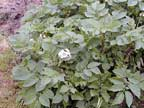
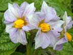
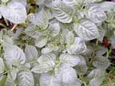
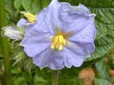
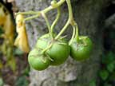

Potato
Solanum tuberosum
Other names
Description
0.4 1m tall herb with erect, branched stem and underground stolons bearing tubers; leaves have alternating small and large leaflets; flowers are large, white, pink to pale violet: fruits are globose, greenish yellow, fleshy berries with numerous yellowish white seeds, but are not usually produced.
Similar plants
Many varieties of potatoes are grown, but all look similar.
Distribution
A crop of fields and gardens throughout New Zealand. Season: Spring through to autumn; whenever there is no frost.
Toxin
Glycoside steroidal alkaloids, especially solanine, solanidine and chaconine. Solanine exerts a direct irritant effect on the mucus membranes; on absorption into the blood stream it has a haemolytic action on red blood cells; it is extremely depressant to the CNS and have a cardiac glycoside like action on the heart. The sprouted eyes of the potato may contain high levels of solanine (1.7%). All green parts are poisonous, particularly berries, tubers greened by sunlight and old and sprouted potatoes. Blighted (Phytophthora infestans) tubers have higher alkaloid concentrations than healthy ones.
Species affected
Cattle, pigs, horses, poultry (rarely sheep as they are unlikely to be fed potatoes).
Clinical signs acute
Acute toxicity causes dullness, colic, diarrhoea, weakness, ataxia, mydriasis, trembling, bradycardia, hypotension, salivation and sometimes paralysis. Chronic toxicity due to eating of large quantities over a long period causes dermatitis of the lower limbs but it has not been reported in New Zealand. Other signs include depression, loss of appetite, sleepiness, rise in temperature, nausea, diarrhoea and dilation of the pupils.
Clinical signs chronic
Large quantities of potatoes fed to young cattle can cause severe anaemia.
Post mortem signs
Non specific gastro enteritis.
Diagnosis
History, clinical signs, plants or tubers in the stomach/rumen.
Differential diagnosis
Toxicity due to other solanum species, other causes of limb dermatitis
Treatment
Symptomatic; fluids, pilocarpine, physostigmine, G.I protectants.
Prognosis
Good, if profuse diarrhoea within 24 hours of ingestion to excrete the toxic plant material.
Prevention
References
Conner H.E. The Poisonous Plants In New Zealand. 1992. GP Publications Ltd, Wellington
Cooper M R, Johnson A W. Poisonous Plants and Fungi in Britan: Animals and Human Poisoning. Her Majesty’s Stationary Office. London. 1998
Parton K, Bruere A.N. and Chambers J.P. Veterinary Clinical Toxicology, 2nd ed. 2001. Veterinary Continuing Education Publication No. 208
|  plant |
 |
|
|
 |
 |
|
|
 |
||
|
|
|
|